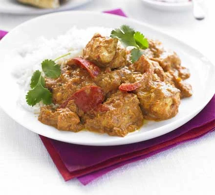

Chicken Tikka Masala

Description
"Indian Dish". We say this because, well, it was more likely to have been invented in the UK! Fragrant Chicken that is spiced in a tandorri spice mix then cooked in a tandoor oven.
Then cooked in a masala sauce.
Ingredients
- Chicken Thighs
- 1 White Onion
- 1 Tikka spice mix
- Garlic Cloves (Minced)
- 400g Chopped Tomatoes
Steps
- Mix the chicken with the spice mix
- Cook the onions and the garlic
- Add chopped tomatoes
- Chuck chicken in and simmer for 20 minutes